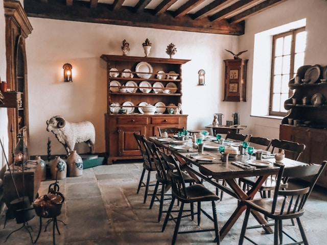

Favorite Cookbooks
Click a cookbook below to see a few details about it.
- Knife Drop: Nick DiGiovanni
- Max the Meat Guy: YouTube Chef
- Pati Jinich: Pati’s Mexican Table
- Kevin Belton: PBS Chef
- Jose El Cook: YouTube Chef
Cookbook Details
Select a cookbook to view its details.

Cooking Tips
Kitchen Tools
Click the button to show some of my favorite kitchen tools.
Share Your Favorite Cookbook
Latest Submission
Nothing submitted as yet.
Stored Submission
No stored data as yet.
Sources
- Kitchen image from Unsplash. Photographer: Magic Fan.
- Cookbook descriptions based on public knowledge.